#> [1] "Total missing values: 314146"4 Exploratory Data Analysis
Chapter Context. This chapter investigates the distributional and structural properties of the daily rainfall data, using findings from the data preparation chapter (Chapter 2) as its starting point rather than repeating the missingness diagnostics performed there. The analyses proceed in a deliberate sequence: target variable distribution, bivariate predictor correlations, temporal dynamics, pressure analysis, seasonal patterns, and feature interactions. Each section produces a specific finding that motivates a corresponding decision in the feature engineering or model specification stages.
4.1 Data Quality Summary
A thorough investigation of missingness is documented in Chapter 2 and summarised briefly here for continuity. The full diagnostic pipeline, comprising co-missingness analysis, temporal structural break detection, ghost sensor identification, and a weather-conditionality test, established the following picture.
The dataset contains 314,146 missing entries in total, distributed highly unevenly across features. The four most affected variables are sunshine (47.7% missing), evaporation (42.5%), cloud3pm (approximately 40%), and cloud9am (approximately 38%). Their missingness is not independent: co-missing rates between any pair of these four variables range from 67% to 93%, confirming that they fail together at the station level rather than through separate independent sensor faults. This constitutes Missing Not At Random at the station level, driven by instrumentation deployment profiles.
A weather-conditionality test confirmed that sunshine missingness does not covary with rainfall amounts: the missing rate is 47.8% on dry days and 47.2% on rainy days. Missingness is station-conditional rather than outcome-conditional, meaning imputed values do not introduce directional bias into the training labels.
The core dynamic variables; pressure, wind speed, temperature, and humidity show missingness below 10% and are available across virtually all observations.
Resolution. A two-stage hybrid imputation pipeline was applied in Chapter 2. Stage 1 applied linear temporal interpolation, bounded by a five-day gap cap, to eight smoothly-evolving meteorological variables: minimum and maximum temperature, morning and afternoon temperature, morning and afternoon pressure, and morning and afternoon humidity. Stage 2 addressed the remaining missingness using mice with method assignments differentiated by variable type. The four continuous atmospheric variables (sunshine, evaporation, cloud9am, cloud3pm) were imputed via predictive mean matching, which constrains imputed draws to the empirically observed range of each variable and preserves marginal distributional shape without imposing parametric assumptions. The three wind direction variables (wind_gust_dir, wind_dir9am, wind_dir3pm) were imputed using Random Forest, which handles their unordered sixteen-level factor structure natively. Each variable’s predictor set was restricted to physically motivated covariates: cloud cover from humidity and pressure, sunshine from cloud cover and temperature, evaporation from wind speed, temperature, and humidity, and wind direction from the corresponding wind speed, pressure, location, and month. Ghost sensor station-variable pairs those with more than 90% missingness across the full observation window were identified before the Stage 2 run and carried forward with binary imputation flags (sunshine_imp_flagged, evap_imp_flagged, cloud3pm_imp_flagged, cloud9am_imp_flagged) rather than populated with extrapolations that have no empirical anchor. The imputed dataset df_final is used throughout the remainder of this chapter. The raw dataset df_clean is used only in this opening section, where using pre-imputation data avoids circularity between the imputed features and the response distribution.
Modelling implication. The concentration of missingness in sunshine and evaporation, both of which exhibit meaningful correlation with rainfall as shown in Section 4.3, creates a direct trade-off: discarding these variables avoids imputation complexity but sacrifices predictive signal, while listwise deletion would eliminate nearly half the dataset and introduce geographic bias toward well-instrumented stations.
4.2 Distributional Properties of the Target Variable
Understanding the marginal distribution of the response variable is a prerequisite for selecting an appropriate model family. A Gaussian assumption carries substantive claims about the data-generating process that can be directly tested.
| Statistic | Value |
|---|---|
| n | 1.42e+05 |
| mean | 2.361 |
| median | 0 |
| sd | 8.478 |
| min | 0 |
| max | 371 |
| q25 | 0 |
| q75 | 0.8 |
| iqr | 0.8 |
| n_zeros | 9.11e+04 |
| pct_zeros | 64.051 |
| n_large | 151 |
| pct_large | 0.106 |
| skewness | 9.836 |
| kurtosis | 181.146 |
| Total Days | Dry Days (0 mm) | Rainy Days (>0 mm) | Zero Inflation (%) |
|---|---|---|---|
| 142199 | 91080 | 51119 | 64.05108 |
The descriptive statistics reveal a distribution fundamentally incompatible with Gaussian modelling assumptions.
Zero-inflation. 64.05% of the 142,199 recorded observations are dry days (rainfall = 0 mm). The median is zero. The data-generating mechanism produces two qualitatively different outcomes: no rain at all versus some positive amount. Any model treating the response as a single continuous variable will be forced to place probability mass on negative values and will systematically misestimate the probability of the zero outcome.
Heavy tails. Among non-zero observations, the distribution is severely right-skewed (skewness = 9.836). The standard deviation (8.478 mm) is nearly four times the mean (2.361 mm). Kurtosis of 181.146 relative to 3 for a normal distribution confirms that extreme events occur far more frequently than a Gaussian model would predict. The maximum recorded value is 371 mm, and 151 events exceed 100 mm.
Modelling implication. The conjunction of zero-inflation and extreme positive skew means a single-component model is insufficient. The data implicitly poses two separate questions: does rain occur, and given that it does, how much falls? This motivates the Zero-Inflated Gamma framework adopted in subsequent analysis.
4.3 Bivariate Correlation Structure
Because rainfall is heavily skewed and the relationships are unlikely to be linear, Spearman rank correlation is used throughout, a non-parametric measure that captures monotonic association without requiring linearity or normality.
| Predictor | Correlation (r) | P-Value | Strength |
|---|---|---|---|
| humidity9am | 0.440 | 0 | Moderate |
| humidity3pm | 0.440 | 0 | Moderate |
| sunshine | -0.400 | 0 | Moderate |
| cloud9am | 0.370 | 0 | Moderate |
| cloud3pm | 0.320 | 0 | Moderate |
| evaporation | -0.310 | 0 | Moderate |
| temp3pm | -0.310 | 0 | Moderate |
| max_temp | -0.300 | 0 | Moderate |
| pressure9am | -0.150 | 0 | Small |
| temp9am | -0.150 | 0 | Small |
| wind_gust_speed | 0.130 | 0 | Small |
| wind_speed9am | 0.083 | 0 | Negligible |
| wind_speed3pm | 0.068 | 0 | Negligible |
| pressure3pm | -0.063 | 0 | Negligible |
| min_temp | 0.022 | 0 | Negligible |
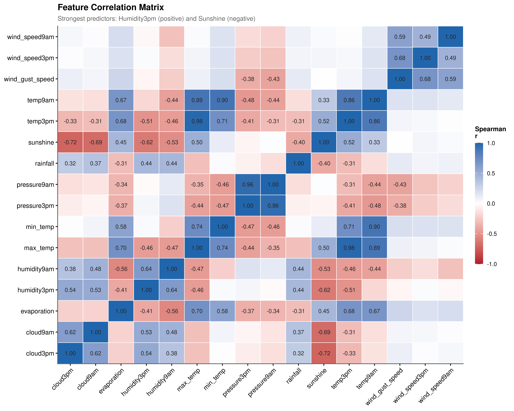
Show the code
run_cocor_test()
#> $pearson1898
#>
#> Pearson and Filon's z (1898)
#>
#> data:
#>
#> alternative hypothesis: true difference in correlations is not equal to 0
#> sample estimates:
#> r.jk.rho r.jh.rho r.kh
#> 0.4436352 -0.4013063 -0.6206376
#>
#>
#> $hotelling1940
#>
#> Hotelling's t (1940)
#>
#> data:
#>
#> alternative hypothesis: true difference in correlations is not equal to 0
#> sample estimates:
#> r.jk.rho r.jh.rho r.kh
#> 0.4436352 -0.4013063 -0.6206376
#>
#>
#> $williams1959
#>
#> Williams' t (1959)
#>
#> data:
#>
#> alternative hypothesis: true difference in correlations is not equal to 0
#> sample estimates:
#> r.jk.rho r.jh.rho r.kh
#> 0.4436352 -0.4013063 -0.6206376
#>
#>
#> $hendrickson1970
#>
#> Hendrickson, Stanley, and Hills' (1970) modification of Williams' t
#> (1959)
#>
#> data:
#>
#> alternative hypothesis: true difference in correlations is not equal to 0
#> sample estimates:
#> r.jk.rho r.jh.rho r.kh
#> 0.4436352 -0.4013063 -0.6206376
#>
#>
#> $olkin1967
#>
#> Olkin's z (1967)
#>
#> data:
#>
#> alternative hypothesis: true difference in correlations is not equal to 0
#> sample estimates:
#> r.jk.rho r.jh.rho r.kh
#> 0.4436352 -0.4013063 -0.6206376
#>
#>
#> $dunn1969
#>
#> Dunn and Clark's z (1969)
#>
#> data:
#>
#> alternative hypothesis: true difference in correlations is not equal to 0
#> sample estimates:
#> r.jk.rho r.jh.rho r.kh
#> 0.4436352 -0.4013063 -0.6206376
#>
#>
#> $steiger1980
#>
#> Steiger's (1980) modification of Dunn and Clark's z (1969) using
#> average correlations
#>
#> data:
#> z = 188.91, p-value < 2.2e-16
#> alternative hypothesis: true difference in correlations is not equal to 0
#> sample estimates:
#> r.jk.rho r.jh.rho r.kh
#> 0.4436352 -0.4013063 -0.6206376
#>
#>
#> $meng1992
#>
#> Meng, Rosenthal, and Rubin's z (1992)
#>
#> data:
#>
#> alternative hypothesis: true difference in correlations is not equal to 0
#> sample estimates:
#> r.jk.rho r.jh.rho r.kh
#> 0.4436352 -0.4013063 -0.6206376
#>
#>
#> $hittner2003
#>
#> Hittner, May, and Silver's (2003) modification of Dunn and Clark's z
#> (1969) using a backtransformed average Fisher's (1921) Z procedure
#>
#> data:
#>
#> alternative hypothesis: true difference in correlations is not equal to 0
#> sample estimates:
#> r.jk.rho r.jh.rho r.kh
#> 0.4436352 -0.4013063 -0.6206376
#>
#>
#> $zou2007
#>
#> Zou's (2007) confidence interval
#>
#> data:
#>
#> alternative hypothesis: true difference in correlations is not equal to 0
#> sample estimates:
#> r.jk.rho r.jh.rho r.kh
#> 0.4436352 -0.4013063 -0.6206376Moisture indicators (positive association). Humidity3pm (\(r = 0.44\)) and cloud cover (\(r \approx 0.37\)) show the strongest positive associations. High afternoon humidity indicates that moisture has accumulated in the lower atmosphere over the course of the day. Cloud cover is both a physical precondition for rain and a consequence of the same atmospheric dynamics that produce it.
Radiation and evaporation indicators (negative association). Sunshine (\(r = -0.40\)) and evaporation (\(r = -0.31\)) exhibit the strongest negative associations. Long sunshine hours proxy clear-sky, high-pressure conditions. High evaporation signals warm, dry, low-humidity surface conditions.
Multicollinearity. The correlation heatmap (Figure 4.1) reveals substantial redundancy among predictors. pressure9am and pressure3pm share \(r = 0.96\), and the two temperature readings are similarly collinear. This directly motivates VIF-based feature selection in the feature engineering chapter.
Statistical validation. Steiger’s Z-test comparing the two strongest opposing predictors yields \(z \approx 188.9\), \(p < 2.2 \times 10^{-16}\). With \(N > 140{,}000\), the p-value alone is uninformative; the Z-statistic magnitude confirms that the differential predictive strength is not a sampling artefact. Humidity and sunshine represent genuinely distinct physical forces operating in opposing directions.
4.4 Temporal Structure of Rainfall
4.4.1 Weekly and Seasonal Frequency
| Day | Count (n) | Percentage |
|---|---|---|
| Tue | 7508 | 14.7% |
| Mon | 7480 | 14.6% |
| Fri | 7378 | 14.4% |
| Wed | 7342 | 14.4% |
| Thu | 7314 | 14.3% |
| Sat | 7057 | 13.8% |
| Sun | 7040 | 13.8% |
| Month | Count (n) | Percentage |
|---|---|---|
| 6 | 5448 | 10.7% |
| 7 | 5250 | 10.3% |
| 5 | 4937 | 9.7% |
| 8 | 4704 | 9.2% |
| 3 | 4444 | 8.7% |
| 9 | 4234 | 8.3% |
| 4 | 4001 | 7.8% |
| 10 | 3770 | 7.4% |
| 11 | 3760 | 7.4% |
| 1 | 3702 | 7.2% |
| 12 | 3562 | 7.0% |
| 2 | 3307 | 6.5% |
| month | Sun | Mon | Tue | Wed | Thu | Fri | Sat | Total |
|---|---|---|---|---|---|---|---|---|
| 1 | 536 | 570 | 514 | 482 | 493 | 567 | 540 | 3702 |
| 2 | 480 | 530 | 469 | 466 | 443 | 471 | 448 | 3307 |
| 3 | 636 | 645 | 639 | 592 | 662 | 644 | 626 | 4444 |
| 4 | 578 | 597 | 566 | 604 | 579 | 515 | 562 | 4001 |
| 5 | 710 | 722 | 765 | 714 | 678 | 681 | 667 | 4937 |
| 6 | 766 | 801 | 804 | 797 | 760 | 753 | 767 | 5448 |
| 7 | 694 | 717 | 728 | 796 | 773 | 818 | 724 | 5250 |
| 8 | 612 | 702 | 694 | 679 | 689 | 687 | 641 | 4704 |
| 9 | 516 | 571 | 616 | 639 | 648 | 659 | 585 | 4234 |
| 10 | 507 | 606 | 579 | 550 | 517 | 456 | 555 | 3770 |
| 11 | 556 | 526 | 554 | 480 | 538 | 575 | 531 | 3760 |
| 12 | 449 | 493 | 580 | 543 | 534 | 552 | 411 | 3562 |
| Total | 7040 | 7480 | 7508 | 7342 | 7314 | 7378 | 7057 | 51119 |
Weekly cycle. The distribution of wet days across days of the week is approximately uniform, ranging from 13.8% to 14.7% (Table 4.4). Atmospheric processes operate independently of the social calendar, and the slight variation is consistent with sampling noise. Day carries little predictive information.
Annual cycle. June (10.7%) and July (10.3%) record the highest frequency of wet days (Table 4.5), consistent with Southern Hemisphere winter frontal systems originating from the Southern Ocean. February (6.5%) and December (7.0%) record the lowest frequencies. Table 4.6 confirms this seasonal signal is not an artefact of any particular day of the week. Month is therefore a legitimate predictor warranting explicit model inclusion.
4.4.2 Day-to-Day Persistence: A Markov Chain Analysis
Show the code
#> No Yes
#> No 93231 17043
#> Yes 17047 14829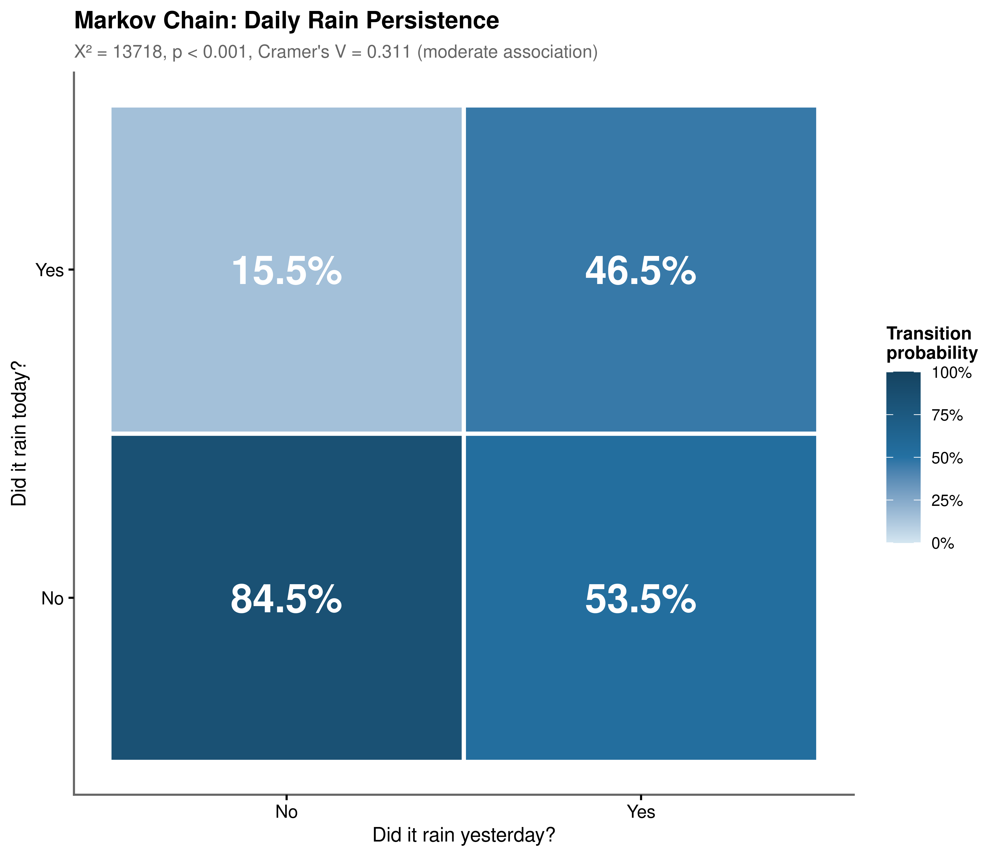
The Chi-squared test yields \(\chi^2 \approx 13{,}718\), \(p < 0.001\), rejecting daily independence by a wide margin. Cramer’s \(V \approx 0.31\) confirms a moderate practical effect size.
The transition matrix (Figure 4.2) reveals an important asymmetry. When the previous day was dry, there is an 85% probability of remaining dry: high-pressure systems are persistent and self-reinforcing. When the previous day was wet, there is only a 47% probability of continued rain, meaning wet events are considerably more transient. This asymmetry has a direct atmospheric interpretation: anticyclonic systems can persist for days to weeks, while frontal systems typically pass through more quickly.
rain_today (lagged one day) carries meaningful predictive signal, yet its modest effect size also demonstrates that autocorrelation alone is insufficient. The wet state is too transient for a persistence-only rule, and other meteorological covariates remain necessary.
4.4.3 Dry Spell Dynamics and Temporal Decay
Show the code
dry_spell_models <- run_dry_spell_models(dry_spell_dat)
#> Wald test:
#> ----------
#>
#> Chi-squared test:
#> X2 = 8099.7, df = 1, P(> X2) = 0.0
#>
#> For each additional day without rain, odds of rainfall decrease by 16.5%
#> 95% CI: [0.831, 0.838]
#> Analysis of Deviance Table
#>
#> Model 1: rain_binary ~ days_since_rain
#> Model 2: rain_binary ~ splines::ns(days_since_rain, df = 4)
#> Resid. Df Resid. Dev Df Deviance Pr(>Chi)
#> 1 138444 169706
#> 2 138441 162027 3 7678.7 < 2.2e-16 ***
#> ---
#> Signif. codes: 0 '***' 0.001 '**' 0.01 '*' 0.05 '.' 0.1 ' ' 1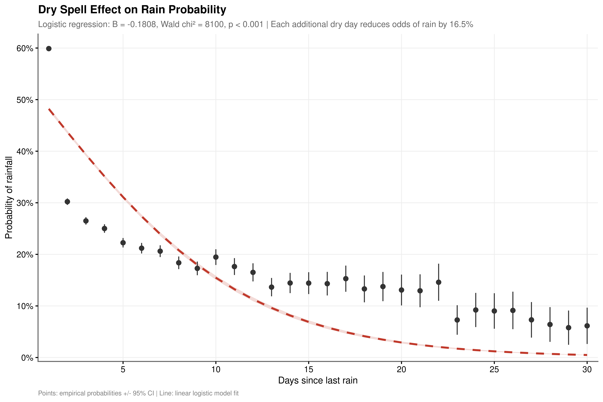
A logistic regression of daily rain occurrence on days_since_rain yields \(OR = 0.835\) (Wald \(\chi^2 \approx 8{,}099\), \(p < 0.001\)): each additional dry day reduces the odds of rainfall by approximately 16.5%. This is consistent with the progressive establishment of stable high-pressure ridges documented in the Markov analysis above.
The linear model is an approximation. A likelihood ratio test against a four-knot natural spline is highly significant (\(\chi^2 \approx 7{,}678\), \(p < 0.001\)). The empirical pattern (Figure 4.3) shows rain probability falling sharply from approximately 48% on Day 1 to around 18% by Day 10, then plateauing in the 12 to 16% range through Days 15 to 30. The linear model underestimates the initial steepness and overestimates the long-drought decline rate. This rapid-then-gradual decay motivates a spline parameterisation of days_since_rain rather than a simple linear term.
4.5 Atmospheric Pressure Dynamics
Show the code
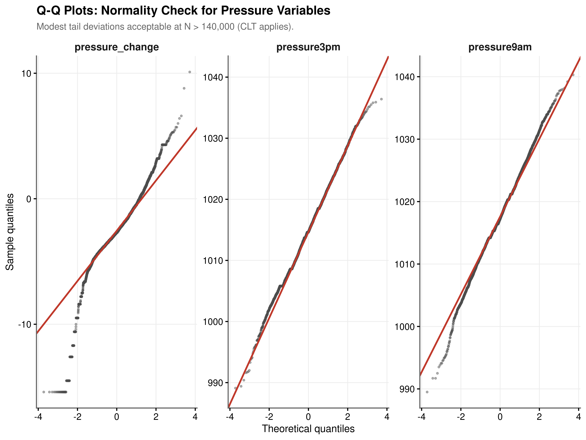
| Metric | Group 1 | Group 2 | t-statistic | df | Adj. P-Value | Significance |
|---|---|---|---|---|---|---|
| pressure3pm | No | Yes | 34.656 | 47862.40 | 0 | **** |
| pressure9am | No | Yes | 63.848 | 47259.23 | 0 | **** |
| pressure_change | No | Yes | -73.395 | 46002.79 | 0 | **** |
| Metric | Effect Size (d) | Interpretation |
|---|---|---|
| pressure3pm | 0.227 | Small |
| pressure9am | 0.419 | Small |
| pressure_change | -0.487 | Small |
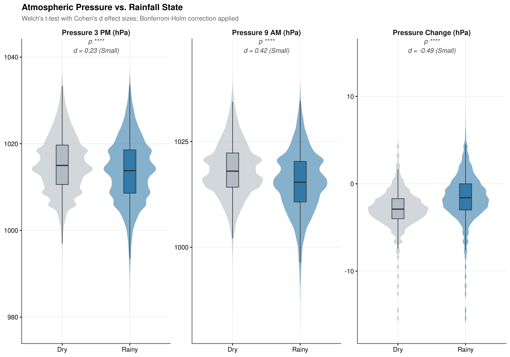
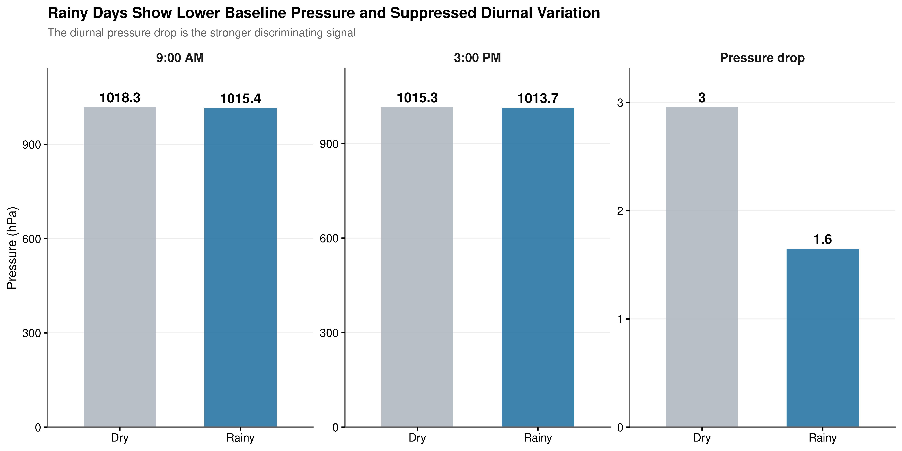
Normality and Test Validity. Q-Q plots reveal modest tail deviations across all three pressure metrics, but with \(N > 140{,}000\) the Central Limit Theorem ensures that sample means are asymptotically normal regardless of the underlying marginal distribution. Welch’s t-test is used throughout to avoid the equal-variance assumption, and Bonferroni-Holm correction is applied across the three comparisons.
Baseline Pressure. Rainy days show significantly lower mean atmospheric pressure than dry days at both observation times (Table 4.7). Cohen’s \(d\) for the baseline measures ranges from 0.227 to 0.419, a small effect (Table 4.8). Lower absolute pressure is a necessary but not sufficient condition for rainfall: the overlap between the two distributions is substantial enough that pressure level alone cannot discriminate reliably between states.
Diurnal Pressure Change. The stronger discriminating signal lies not in the baseline but in how pressure evolves across the day (Figure 4.4, Figure 4.5). Cohen’s \(d = -0.487\) for pressure_change exceeds the effect size of either absolute pressure reading, and the Welch t-statistic of \(-73.395\) is the largest in magnitude among all three metrics (Table 4.7, Table 4.8). The rate of pressure change across the day is therefore a more discriminating indicator of rainfall state than the morning or afternoon level in isolation, and it is entered as a primary derived feature in the engineering pipeline.
4.6 Seasonal Rainfall Intensity
4.6.1 Cyclical Patterns
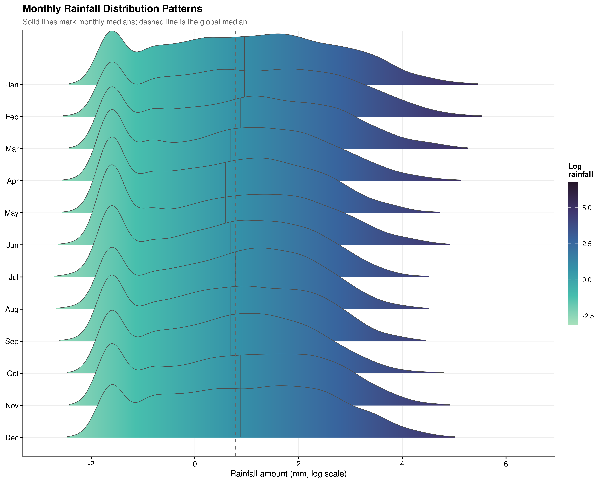
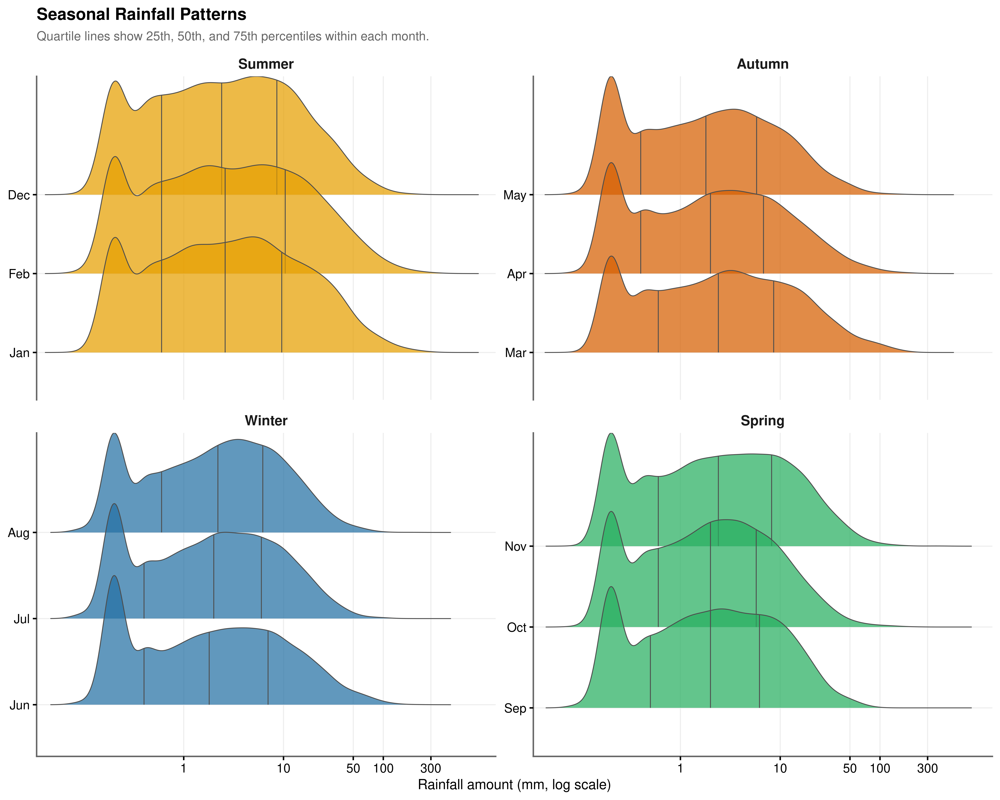
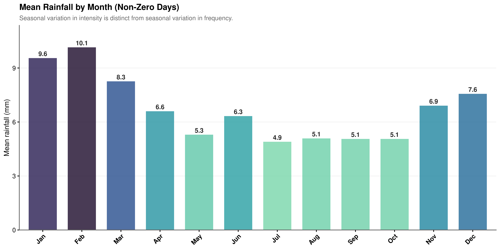
The frequency analysis in Section 4.4.1 established when rain tends to occur. This section investigates how much falls when it does.
January and February distributions are shifted systematically right of the global median: summer storms are considerably more intense when they arrive, even though they occur less frequently. June through August cluster left, representing lower but more consistent rainfall. February records the highest mean intensity per wet day at 10.1 mm, nearly double July’s 4.9 mm (Figure 4.8).
Summer rainfall has a wide interquartile range and a pronounced right tail beyond 100 mm per day, reflecting episodic convective storms (Figure 4.7). Winter shows a narrower, more peaked distribution. Both the frequency variation (more rain in winter) and the intensity variation (heavier rain in summer) carry independent information, and a complete model must account for both dimensions.
Encoding implication. Because the seasonal cycle is continuous, the transition from December to January is climatologically smooth, and treating Month as an unordered factor discards that proximity information. Cyclical encoding via sine and cosine transformations of the month number preserves the circular geometry of the annual cycle.
4.6.2 Statistical Validation
| Season | Variable | N (Events) | Mean (mm) | SD (mm) |
|---|---|---|---|---|
| Summer | rainfall | 10571 | 9.070 | 18.195 |
| Autumn | rainfall | 13382 | 6.667 | 13.495 |
| Winter | rainfall | 15402 | 5.463 | 9.809 |
| Spring | rainfall | 11764 | 5.651 | 10.495 |
Show the code
| Test | Chi-squared | df | P-value | Effect Size | Magnitude |
|---|---|---|---|---|---|
| Kruskal-Wallis Rank Sum Test | 230.44 | 3 | <0.001 | 0.0044 | small |
| * Effect size: Epsilon-squared. | |||||
| † Alpha = 0.05 |
| Group 1 | Group 2 | Z-Statistic | Adj. P-Value | Significance |
|---|---|---|---|---|
| Summer | Autumn | -11.468 | 0.000 | **** |
| Summer | Winter | -14.483 | 0.000 | **** |
| Summer | Spring | -11.049 | 0.000 | **** |
| Autumn | Winter | -2.851 | 0.026 | * |
| Autumn | Spring | 0.091 | 1.000 | ns |
| Winter | Spring | 2.846 | 0.027 | * |
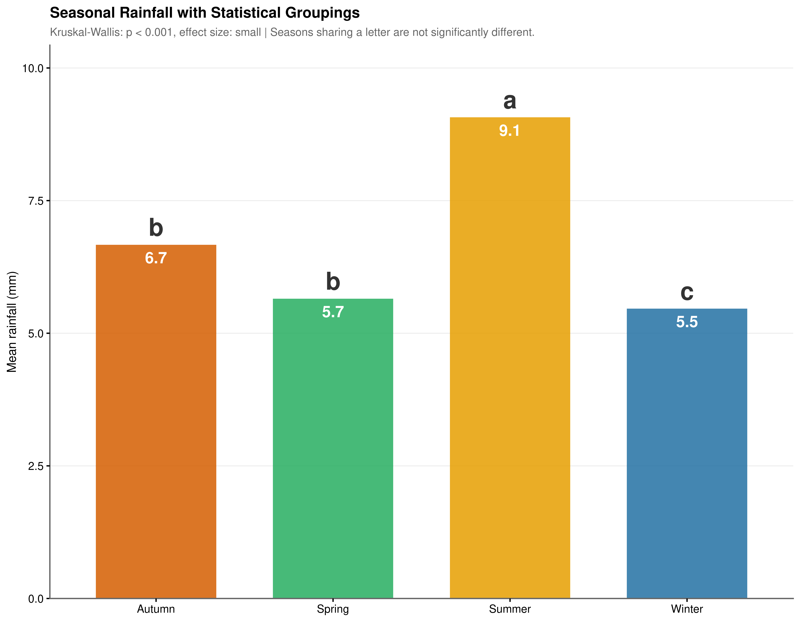
The Kruskal-Wallis test yields \(\chi^2 = 230.44\), \(p < 0.001\), strongly rejecting the null of equal seasonal distributions (Table 4.10). The epsilon-squared effect size (\(\eta^2 \approx 0.0044\)) is small: the seasonal signal is real but accounts for only a minor fraction of total variance in rainfall intensity, reinforcing the necessity of a multivariate approach.
Post-hoc Dunn’s tests identify three distinct statistical groups (Figure 4.9, Table 4.11). Summer stands alone as the most intense season (\(\bar{x} = 9.070\) mm, \(p < 0.001\) vs. all others). Autumn and Spring are statistically indistinguishable (\(p_\text{adj} = 1.000\)). Winter registers the lowest mean intensity (\(\bar{x} = 5.463\) mm) and is statistically distinct from Spring (\(p_\text{adj} = 0.027\)).
4.7 Feature Interactions: The “Rain Corner”
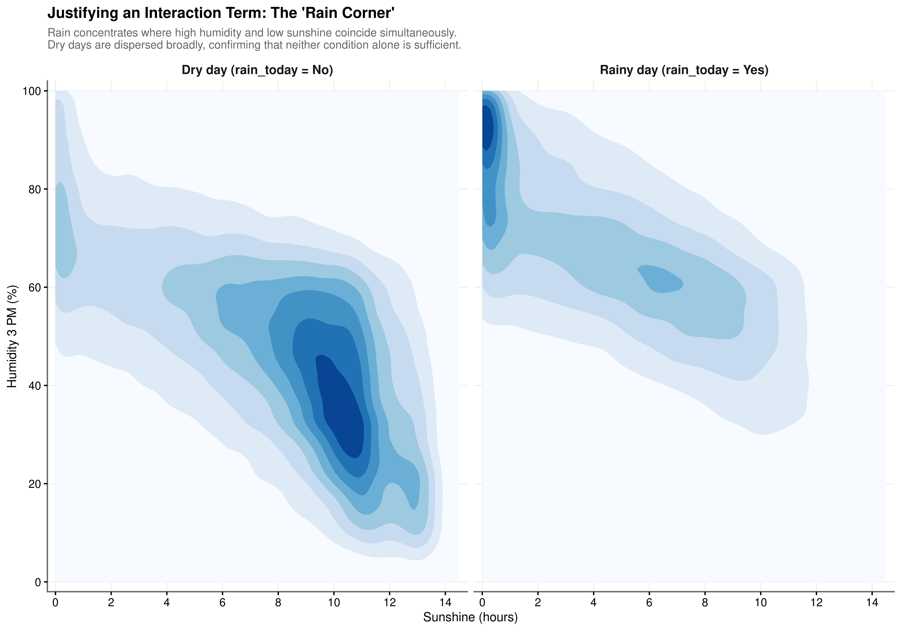
While individual correlation analysis in Section 4.3 identifies humidity and sunshine as primary predictors, a standard additive model assumes their effects on the log-odds of rainfall are independent. The bivariate density plots (Figure 4.10) test this assumption directly by visualising the joint distribution of these two features conditioned on the rainfall outcome.
Dry Day Structure. The feature space for dry days exhibits a concentrated region in the lower-right of the humidity-sunshine plane, where sunshine is moderate-to-high and afternoon humidity is low. This reflects the high-pressure suppression regimes documented in Section 4.4.2, where clear skies drive both elevated sunshine duration and suppressed humidity. Neither variable in isolation is a reliable discriminator between outcomes; the specific combination carries the predictive signal.
The Rain Corner. Precipitation events concentrate tightly in the upper-left quadrant of the feature space, where afternoon humidity is high and sunshine hours are low simultaneously. This cluster is not a feature of either variable’s marginal distribution: high humidity alone and low sunshine alone each occur on dry days with regularity. It is the joint occurrence that distinguishes the rainfall regime. The density mass that is dispersed broadly across the dry-day panel collapses into this single region when rain is present, a pattern that an additive model would be structurally unable to capture.
Modelling Implication. The asymmetry between the two panels confirms a genuine statistical interaction: the effect of humidity on rainfall probability is conditional on the level of sunshine, and vice versa. This justifies including a multiplicative interaction term (\(\text{Humidity3pm} \times \text{Sunshine}\)) in the model specification, in addition to both main effects.
4.8 Summary and Modelling Implications
The preceding analyses characterise the dataset along six interconnected dimensions, each producing a specific modelling requirement.
The distributional structure of the target variable; 64.05% zeros, extreme positive skew, and kurtosis of 181.146 rules out any single-component Gaussian model. A two-part framework separating occurrence from intensity is the appropriate response.
The missingness analysis (documented in Chapter 2, summarised in Section 4.1) establishes that imputation is necessary to preserve both sample size and the predictive signal in sunshine and evaporation, and that the predictive mean matching procedure does not introduce outcome-related bias. Downstream models incorporating these predictors must be fitted across all imputed completions and pooled via Rubin’s combining rules.
The correlation structure identifies humidity, cloud cover, sunshine, and evaporation as the strongest individual predictors, and flags severe multicollinearity among morning-afternoon pairs. VIF-based feature selection is required.
The temporal analyses establish that both the day-to-day Markov state and the cumulative dry spell duration carry predictive signal. Month should be cyclically encoded. The dry spell decay is non-linear and warrants a natural spline parameterisation of days_since_rain.
The pressure analysis identifies the diurnal pressure change as the more discriminating pressure-derived feature, with Cohen’s \(d = -0.487\) separating rainy from dry days more effectively than absolute pressure level.
The interaction analysis provides empirical justification for a \(\text{Humidity} \times \text{Sunshine}\) interaction term, reflecting the physical reality that precipitation concentrates where high moisture and low solar radiation coincide in the Rain Corner of the feature space.